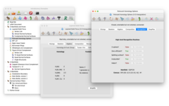

Latest version: 7.4.1 (November 2025)
| Contents | C++/Python changes |
|---|
|
|
|
| Other pages |
|---|
|
|
(Back to contents...)
Regina is a software package for low-dimensional topologists, with a focus on
3-manifold and 4-manifold triangulations, knots and links, normal surfaces,
and angle structures.
For 3-manifolds, it includes high-level tasks such as 3-sphere and unknot
recognition, connected sum decomposition and Hakenness testing, comes with a
rich database of census manifolds, and incorporates the SnapPea kernel for
working with hyperbolic manifolds. For 4-manifolds, it offers several
combinatorial and algebraic tools, as well as support for normal hypersurfaces.
For knots and links, Regina can perform combinatorial manipulation, compute
knot polynomials, handle virtual knots and links, and work with several
import/export formats.
Regina comes with a full graphical user interface, as well as Python bindings
and a low-level C++ programming interface.
See the users' handbook for a detailed list
of features.
(Back to contents...)
Click on each thumbnail below for a full-sized version of the screenshot.
|
 |
|
Studying 3-manifold
triangulations |
Normal surfaces and
angle structures |
|
|
|
Knots and
links |
In-built Python
scripting |
(Back to contents...)
The following downloads are available:
All direct downloads come with
SHA-1 checksums
and
SHA-256 checksums,
signed with Ben Burton's GPG key.
If you encounter any problems when you run Regina, you can check the
troubleshooting page to
see if your problem is discussed there. You also most welcome
to contact us for help.
Mac
Regina runs natively on both Intel and Apple Silicon machines.
It ships with its own copy of Python 3, which is bundled inside
Regina's macOS app.
You can download Regina either from this website, or via the App Store
(for free of course).
Not sure which? Start with the App Store version (but read below).
| macOS version |
Website download |
App Store |
|---|
Tahoe (26)
Sequoia (15)
Sonoma (14)
|
 |
Download here |
|
There are some minor differences between the website and App Store versions.
The App Store version:
- means that macOS will notify you of upgrades;
- is sandboxed for extra security, which limits file access through
Python and the command-line tools (see below).
Sandboxing is a security measure that comes with all App Store downloads:
it ensures that apps only access files that you explicitly choose
through the graphical file dialogs (Open, Save, etc.).
For Regina, this means that when you open a Python console or
run command-line tools (regina-python, regfiledump, etc.),
the only personal files you can access are those in your
Downloads folder. You can still access world-readable files,
such as those in your Applications folder.
- The website download is cryptographically signed with Ben Burton's Apple
developer certificate, and has been pre-screened (notarised) by Apple.
macOS will verify all of this when you first try to run Regina.
You should see a message like
“Regina is an app downloaded from the internet…
Apple checked it for malicious software and none was detected.”.
- The App Store version has been screened by both machines and humans at
Apple, and has a chain of cryptographic signatures that certify this.
These signatures will be verified when you install Regina via the
App Store.
Windows
Regina on Windows uses a standard point-and-click installer.
Regina now only supports 64-bit Windows,
and only on Intel/AMD64 chipsets (i.e., the x64 architecture).
Most modern Windows installations are of this type,
and this is almost certainly the version that you want.
If your machine has an ARM64 chipset (e.g., you have a Mac with
Apple Silicon), you will need to run Regina under a different operating
system (e.g., macOS or GNU/Linux).
| Windows version |
Architectures |
Installer |
|---|
Windows 11
Windows 10 |
 |
x64 |
Download |
- When downloading or running the installer you may see a security warning,
such as “Microsoft Defender SmartScreen prevented an
unrecognized app from starting…”, or a message that
“Microsoft Defender SmartScreen couldn't verify if this file
is safe…”.
This is because Microsoft has not added Regina to its database of
known applications.
Click More info or look for a drop-down box with more options,
and you should be able to run the installer anyway.
- If you wish to verify the integrity of the download, you can compare
checksums against the expected
SHA-1 checksums
and
SHA-256 checksums,
which are cryptographically signed with
Ben Burton's GPG key.
GNU/Linux
You can download ready-made packages for several GNU/Linux distributions
through Regina's online package repositorites.
These repositories integrate with your native package manager
(apt, dnf/yum, zypper, etc.)
to help you keep Regina up-to-date automatically.
For instructions on setting up Regina's package repositories,
click on the Install link for your system in the table below.
Regina's GNU/Linux packages are named regina-normal (to avoid conflicting
with the other Regina).
| Distribution |
Versions |
Architectures |
Instructions |
|---|
| Arch Linux |
|
Rolling release |
x86_64 |
Install |
| Debian |
 |
13.x (trixie)
12.x (bookworm) |
amd64
arm64
i386 (bookworm only) |
Install |
| unstable (sid) |
Everything |
| Fedora |
 |
43
42
41 |
aarch64
x86_64 |
Install |
| openSUSE |
 |
Leap 16.0
Leap 15.6 |
aarch64
x86_64 |
Install |
| Ubuntu |
|
25.10 (questing)
25.04 (plucky)
24.04 LTS (noble) |
amd64
arm64 |
Install |
-
You do not need to know what architecture you have; the online
repositories will work this out for you automatically.
-
For reference, amd64/x86_64 refers to 64-bit Intel machines,
arm64/aarch64 refers to 64-bit ARM machines
(including Apple Silicon), and
i386 refers to very old 32-bit Intel machines.
Together these cover almost any typical desktop or laptop nowadays.
-
If you have a more exotic chipset that is not in the table above, you can try
downloading the regina-normal source package (which is provided for all
distributions above except for Arch Linux), and use this to build a
binary package yourself (e.g., using debuild or rpmbuild).
Alternatively, if you really want a ready-made binary package, you could try
the Debian unstable packages,
which are built for every architecture in Debian.
-
If your distribution is in the table above but your version is
too old, then your version of GNU/Linux may have passed its end-of-life.
This is a security risk, since most distributions do not
provide security updates for old (end-of-life) versions.
You should seriously consider upgrading your machine.
-
If your distribution is in the table above but your version is
too new, then drop Ben
an email and he should be able to upload a package for you.
Otherwise you can always build from source (see below).
- All of Regina's GNU/Linux repositories use cryptographic signatures to
verify the integrity of the packages. Follow the appropriate Install
link above for details.
PyPI / SageMath
Marc Culler, Nathan Dunfield and Matthias Goerner have
kindly prepared a PyPI package that allows
Regina to be used with SageMath.
This includes the Python interface to Regina's mathematical engine,
but does not include Regina's graphical user interface or
command-line tools.
Of course, whilst the packages are written to work with any modern version
of SageMath, your experiences might vary (particular with an older SageMath
and/or operating system). Follow the instructions link above for details.
iPad
The iPad app is currently in hiatus. It has not been updated since before the
pandemic began, and there is a lot of rewriting to do.
Hopefully Ben will have time to do this some time during 2025.
Source code
For other systems not listed above, you will need to build Regina
from its source code.
You can download the source code here.
Please see the separate page on building Regina
for instructions on how to build Regina and
what libraries and tools you will need to have installed.
(Back to contents...)
Regina comes with rich documentation for both users and developers.
Users' Handbook
The Regina Handbook is full of screenshots, and walks you through the
different things that Regina can do.
You can read the handbook from within Regina by selecting
Help → Regina Handbook
from the menu. You can also
read it here online.
Python/C++ API Documentation
If you are doing Python scripting or C++ programming with Regina,
there is extensive API documentation for Regina's mathematical
engine. This describes the various objects, classes and functions that
Regina makes available to you.
You can read the API documentation by:
- selecting Help → Python API Reference
from the menu;
- reading it here online;
- getting inline help directly within Python via docstrings
(but please see the handbook for the
limits of what these docstrings can and cannot provide).
(Back to contents...)
Regina 7.4.1
This is a service release to fix some important bugs, and to support
additional build environments. In particular:
- Fixes a serious (and very old) bug that occurred when triangulating
a real boundary component. In short, the new triangulation of the
original boundary component could have had inconsistencies in the
labelling of its own lower-dimensional faces. Ideal boundaries were
not affected. For a detailed discussion of how this might have
affected you, see the bugs page.
- Fixes a bug in Katie's quadricolour search routine, which would cause
a segfault for certain inputs.
- Adds a few missing Python bindings for triangulations in higher
dimensions.
Regina 7.4
In case you missed it, Regina 7.4 (August 2025) added many new features:
- Now supports virtual knots and links, with new invariants such as
odd writhe, arrow polynomials, affine index polynomials, and
extended groups.
- Several new constructions, such as Whitehead doubles over links,
doubling triangulations over their boundaries, and many new
out-of-the-box example triangulations and links.
- Several new operations on triangulations and link diagrams, including
improving treewidth, truncating individual vertices in 3-D, and more
elementary moves in more dimensions.
- New invariants and properties for link diagrams, including Alexander
polynomials, Seifert circles, and connected diagram components.
- Significantly better simplification for 4-D triangulations, including
Rhuaidi Burke's “up-side-down” simplification heuristics.
- Text codes for link diagrams now include signed Gauss codes, plus an
extension of Regina's knot signatures to multiple-component links.
- You can now lock top-dimensional simplices and/or their facets in a
triangulation, to prevent these from being modified during operations
such as simplification or elementary moves. Locks are also encoded
as part of the isomorphism signature.
- Gave the graphical user interface a general glow-up, and added
initial support for multithreaded computations.
- The tool DGT is now called Katie, and can now work with 1-handles
(thanks again to Rhuaidi Burke).
- New command-line tool regina-helper, which can do things like create
Makefiles and run the test suite.
- Fixes an occasional problem where the “try harder” option for
simplifying triangulations could make the user interface crash.
- Many, many other smaller features and optimisations.
Also, the build requirements have changed: Regina now uses C++20 (not C++17),
the GUI now requires Qt 6.x, the API docs now require
Doxygen ≥ 1.9.2, and you no longer need
Jansson, Popt or CppUnit.
(Back to contents...)
The old SourceForge mailing lists have now been decommissioned.
To be notified of new releases, you can instead subscribe to Regina's releases
directly on GitHub. See the
Regina Handbook
for details.
(Back to contents...)
The primary developers of Regina are
Benjamin Burton,
Ryan Budney, and
William Pettersson.
Many others have been of assistance with this project, be it through
time, knowledge, testing or code. Please see the
full list of acknowledgements
in the users' handbook.
Citation
If you find Regina useful in your research, please consider citing it as
you would any other paper that you use. A suggested form of reference is:
Benjamin A. Burton, Ryan Budney, William Pettersson, et al.,
Regina: Software for low-dimensional topology,
http://regina-normal.github.io/, 1999–2025.
Or, in BibTeX:
@misc{regina,
author = {Benjamin A. Burton and Ryan Budney and William Pettersson and others},
title = {Regina: Software for low-dimensional topology},
howpublished = {{\tt http://\allowbreak regina-normal.\allowbreak github.\allowbreak io/}},
year = {1999--2025}}
Copying and modification
Regina is copyright © 1999–2025, The Regina development team.
This program is free software; you can redistribute it and/or modify it
under the terms of the GNU General Public License as published by the
Free Software Foundation; either version 2 of the License, or (at your
option) any later version.
Some of this code comes with additional permissions, which allow it
to be distributed through online repositories such as Apple's App Store
or Google Play. See the
full license in the users' handbook
for details.
This program is distributed in the hope that it will be useful, but
WITHOUT ANY WARRANTY; without even the implied warranty of
MERCHANTABILITY or FITNESS FOR A PARTICULAR PURPOSE. See the GNU General
Public License for more details.
You should have received a copy of the GNU General Public License along
with this program; if not, see
https://www.gnu.org/licenses/.
Detailed license
Regina includes portions of external software for specialised tasks
(such as code from SnapPea and SnapPy for some geometric calculations,
and code from Normaliz for computing Hilbert bases).
For complete license details, including the full GNU General Public
License and information on external software that Regina uses,
see the
full license in the users' handbook.
(Back to contents...)
If you have any suggestions, problems, bugs, wishes, frustrations or
otherwise miscellaneous comments, we would really love to hear
them. This program is permanently under development and we would like to
know what people want out of it.
If you have written your own extensions that you think could be
worth putting in the main release, please do write and let us know.
Even if you have no comments to make, it's always nice to hear
from people using Regina, even if it's just to say hi.
We're always interested to hear how this software is being used.
You can contact us by email: our websites are linked to our names in the
author list above.
(Back to contents...)
Regina does not collect any data.
(Back to contents...)

{kind=link}
{kind=link}
{kind=link}
{kind=link}